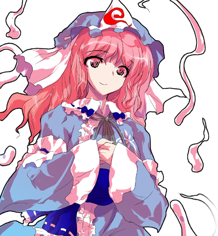

西行寺幽々子 사이교지 유유코
キャラクター 캐릭터
白玉楼の亡霊のお嬢様。ふわふわとのんびりした柔らかい口調で、いつも食べ物のことを考えています。
백옥루의 망령 아가씨. 느긋하고 부드러운 말투로, 늘 먹을 것 생각을 합니다.
サンプル4（Hikari） 3:53〜4:30
샘플 4 (Hikari) 3:53〜4:30
台詞 대사
掛け声 기합 (14)
| No | ファイル名 | 状況 상황 | 台詞 | 読み | 意味 뜻 |
|---|---|---|---|---|---|
| 1 | vo_yuyuko_eff_l_01 | 弱攻撃の掛け声 약공격 기합 | えいっ。 | えいっ | 에잇. |
| 2 | vo_yuyuko_eff_l_02 | 弱攻撃の掛け声 약공격 기합 | それっ。 | それっ | 자. |
| 3 | vo_yuyuko_eff_l_03 | 弱攻撃の掛け声 약공격 기합 | はいっ。 | はいっ | 하잇. |
| 4 | vo_yuyuko_eff_l_04 | 弱攻撃の掛け声 약공격 기합 | ほいっ。 | ほいっ | 호잇. |
| 5 | vo_yuyuko_eff_h_01 | 強攻撃の掛け声 강공격 기합 | えーいっ！ | えーいっ | 에-잇! |
| 6 | vo_yuyuko_eff_h_02 | 強攻撃の掛け声 강공격 기합 | そーれっ！ | そーれっ | 자-앗! |
| 7 | vo_yuyuko_eff_h_03 | 強攻撃の掛け声 강공격 기합 | やあっ！ | やあっ | 야앗! |
| 8 | vo_yuyuko_eff_h_04 | 強攻撃の掛け声 강공격 기합 | はあっ！ | はあっ | 하앗! |
| 9 | vo_yuyuko_eff_w_01 | 強攻撃のひとこと 강공격 한마디 | あらあら！ | あらあら | 어머어머! |
| 10 | vo_yuyuko_eff_w_02 | 強攻撃のひとこと 강공격 한마디 | めっ！ | めっ | 떽! |
| 11 | vo_yuyuko_eff_w_03 | 強攻撃のひとこと 강공격 한마디 | いただきっ！ | いただきっ | 잘 먹겠습니다! |
| 12 | vo_yuyuko_eff_w_04 | 強攻撃のひとこと 강공격 한마디 | そこね！ | そこね | 거기구나! |
| 13 | vo_yuyuko_eff_s_01 | ジャンプ・ダッシュの小さな息 점프·대시 숨소리 | ふわっ | ふわっ | 둥실 |
| 14 | vo_yuyuko_eff_s_02 | ジャンプ・ダッシュの小さな息 점프·대시 숨소리 | よいしょ | よいしょ | 영차 |
必殺技 필살기 (6)
| No | ファイル名 | 状況 상황 | 台詞 | 読み | 意味 뜻 |
|---|---|---|---|---|---|
| 15 | vo_yuyuko_Special1_01 | 必殺技1（技名） 필살기 1 (기술 이름) | ゴーストバタフライ！ | ごーすとばたふらい | 고스트 버터플라이! |
| 16 | vo_yuyuko_Special1_02 | 必殺技1（ひとこと） 필살기 1 (한마디) | いってらっしゃい。 | いってらっしゃい | 다녀오렴. |
| 17 | vo_yuyuko_Special2_01 | 必殺技2（技名） 필살기 2 (기술 이름) | 死蝶。 | しちょう | 사접. |
| 18 | vo_yuyuko_Special2_02 | 必殺技2（ひとこと） 필살기 2 (한마디) | ここで待っててね。 | ここで まっててね | 여기서 기다리렴. |
| 19 | vo_yuyuko_Special3_01 | 必殺技3（技名） 필살기 3 (기술 이름) | 舞扇！ | まいおうぎ | 무선! |
| 20 | vo_yuyuko_Special3_02 | 必殺技3（ひとこと） 필살기 3 (한마디) | お空へどうぞ〜。 | おそらへ どうぞー | 하늘로 가 보렴~. |
スペルカード宣言 스펠카드 선언 (2)
| No | ファイル名 | 状況 상황 | 台詞 | 読み | 意味 뜻 |
|---|---|---|---|---|---|
| 21 | vo_yuyuko_Spell1_call | スペルカード（超必殺技）1の宣言 스펠카드 1 선언 | 「反魂蝶 -八分咲-」。 | はんごんちょう はちぶざき | 「반혼접 -팔분피기-」. |
| 22 | vo_yuyuko_Spell2_call | スペルカード（超必殺技）2の宣言 스펠카드 2 선언 | 桜符「完全なる墨染の桜 -開花-」！ | おうふ かんぜんなる すみぞめのさくら かいか | 앵부「완전한 스미조메 벚꽃 -개화-」! |
システム・挑発 시스템·도발 (1)
| No | ファイル名 | 状況 상황 | 台詞 | 読み | 意味 뜻 |
|---|---|---|---|---|---|
| 23 | vo_yuyuko_Taunt | 挑発 도발 | もぐもぐ……あなたも食べる？ | もぐもぐ あなたも たべる | 냠냠… 너도 먹을래? |
キャラクター固有 캐릭터 고유 (2)
| No | ファイル名 | 状況 상황 | 台詞 | 読み | 意味 뜻 |
|---|---|---|---|---|---|
| 24 | vo_yuyuko_PassThrough_01 | 相手の体をすり抜ける 상대를 통과 | おじゃましま〜す。 | おじゃましまーす | 실례할게~. |
| 25 | vo_yuyuko_PassThrough_02 | 相手の体をすり抜ける 상대를 통과 | 後ろよ。 | うしろよ | 뒤야. |
被ダメージ・KO 피격·KO (6)
| No | ファイル名 | 状況 상황 | 台詞 | 読み | 意味 뜻 |
|---|---|---|---|---|---|
| 26 | vo_yuyuko_hurt_l_01 | 小ダメージ 약한 피격 | あらっ！ | あらっ | 어머! |
| 27 | vo_yuyuko_hurt_l_02 | 小ダメージ 약한 피격 | いたっ！ | いたっ | 아얏! |
| 28 | vo_yuyuko_hurt_l_03 | 小ダメージ 약한 피격 | きゃっ！ | きゃっ | 꺅! |
| 29 | vo_yuyuko_hurt_h_01 | 大ダメージ・吹き飛び・投げられ 강한 피격·날아감·잡힘 | きゃああっ！ | きゃああっ | 꺄아악! |
| 30 | vo_yuyuko_hurt_h_02 | 大ダメージ・吹き飛び・投げられ 강한 피격·날아감·잡힘 | いやあああっ！ | いやあああっ | 싫어어엇! |
| 31 | vo_yuyuko_hurt_h_03 | 大ダメージ・吹き飛び・投げられ 강한 피격·날아감·잡힘 | ああっ……！ | ああっ | 아앗…! |
ラウンド・勝敗 라운드·승패 (7)
| No | ファイル名 | 状況 상황 | 台詞 | 読み | 意味 뜻 |
|---|---|---|---|---|---|
| 32 | vo_yuyuko_Intro_01 | 登場（共通） 등장(공통) | あら、お客様？ お茶菓子は持ってきてくれた？ | あら おきゃくさま おちゃがしは もってきてくれた | 어머, 손님? 다과는 가져왔어? |
| 33 | vo_yuyuko_Intro_02 | 登場（共通） 등장(공통) | 冥界は、いつでも歓迎よ。 | めいかいは いつでも かんげいよ | 명계는 언제든 환영이야. |
| 34 | vo_yuyuko_Intro_03 | 登場（共通） 등장(공통) | お腹が空いたわ。早めに済ませましょう。 | おなかがすいたわ はやめに すませましょう | 배고파. 빨리 끝내자. |
| 35 | vo_yuyuko_RoundWin_01 | ラウンド勝利（短く） 라운드 승리(짧게) | あら、おしまい？ | あら おしまい | 어머, 끝이야? |
| 36 | vo_yuyuko_RoundWin_02 | ラウンド勝利（短く） 라운드 승리(짧게) | ごちそうさま。 | ごちそうさま | 잘 먹었습니다. |
| 37 | vo_yuyuko_Win_01 | 試合に勝利 게임 승리 | 妖夢〜、ごはんまだ〜？ | ようむー ごはん まだー | 요우무~ 밥 아직이야~? |
| 38 | vo_yuyuko_Win_02 | 試合に勝利 게임 승리 | 春の宴の、前菜にもならないわね。 | はるのうたげの ぜんさいにも ならないわね | 봄 연회의 전채도 안 되네. |
対戦相手別 상대별 (6)
| No | ファイル名 | 状況 상황 | 台詞 | 読み | 意味 뜻 |
|---|---|---|---|---|---|
| 39 | vo_yuyuko_Intro_youmu_a | 登場：妖夢戦（先に話す。妖夢が「勝ったら作ります。負けたら抜きです！」と返します） 등장: 요우무전 (먼저 말함. 요우무의 응답 「이기시면 해 드릴게요. 지시면 굶으세요!」) | 妖夢、今日の晩ご飯はなあに？ | ようむ きょうの ばんごはんは なあに | 요우무, 오늘 저녁밥은 뭐야? |
| 40 | vo_yuyuko_Intro_youmu_b | 登場：妖夢戦（妖夢の「幽々子様、つまみ食いはここまでです！」に返す） 등장: 요우무전 (요우무의 「유유코 님, 몰래 집어 먹는 건 여기까지예요!」에 대답) | あら、まだ前菜よ？ 妖夢。 | あら まだ ぜんさいよ ようむ | 어머, 아직 전채인걸? 요우무. |
| 41 | vo_yuyuko_Win_youmu | 妖夢に勝利 요우무에게 승리 | まだまだ半人前ね、妖夢。 | まだまだ はんにんまえね ようむ | 아직 반쪽짜리구나, 요우무. |
| 42 | vo_yuyuko_Intro_yukari_a | 登場：紫戦（先に話す。紫が「さあ、どこかしら。勝てたら教えてあげる。」と返します） 등장: 유카리전 (먼저 말함. 유카리의 응답 「글쎄, 어디일까. 이기면 알려 줄게.」) | 紫、私のお団子、どこへやったの？ | ゆかり わたしの おだんご どこへ やったの | 유카리, 내 경단 어디 뒀어? |
| 43 | vo_yuyuko_Intro_yukari_b | 登場：紫戦（紫の「幽々子、お茶菓子なら持ってきてないわよ。」に返す） 등장: 유카리전 (유카리의 「유유코, 다과는 안 가져왔어.」에 대답) | あら、残念。じゃあ、あなたで我慢するわ。 | あら ざんねん じゃあ あなたで がまんするわ | 어머 아쉬워라. 그럼 너로 참을게. |
| 44 | vo_yuyuko_Win_yukari | 紫に勝利 유카리에게 승리 | 紫の分のお団子も、いただくわね。 | ゆかりの ぶんの おだんごも いただくわね | 유카리 몫 경단도 내가 먹을게. |